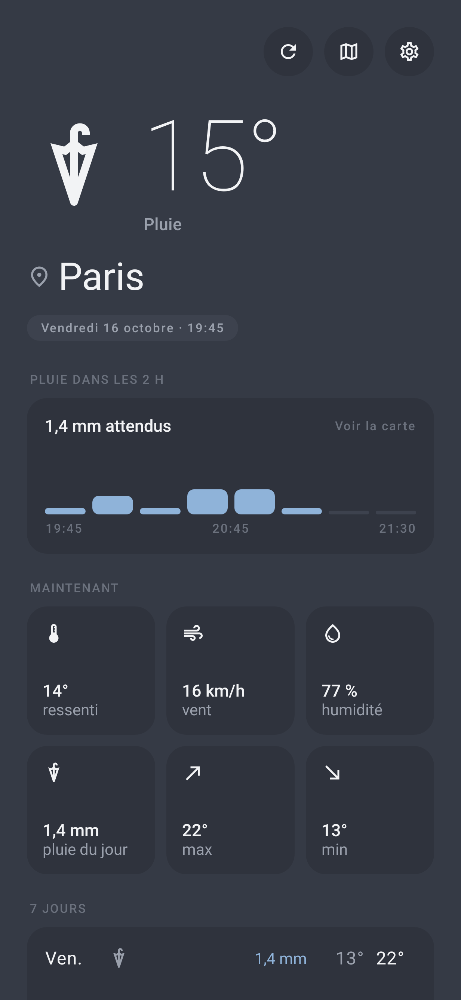
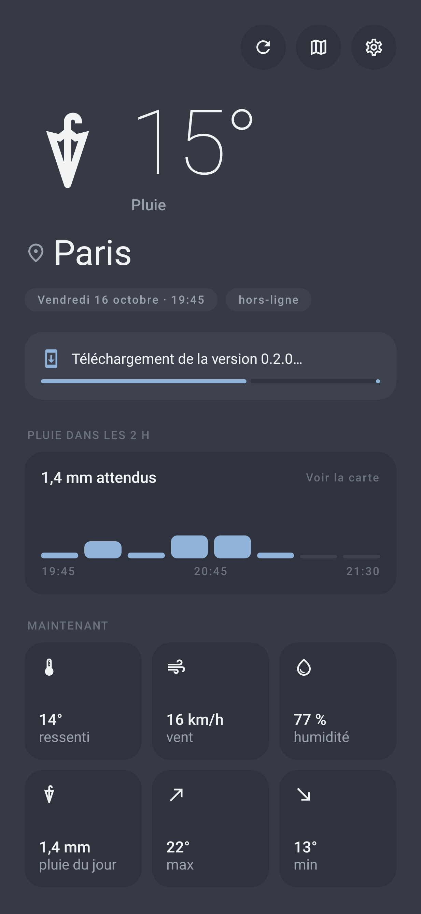
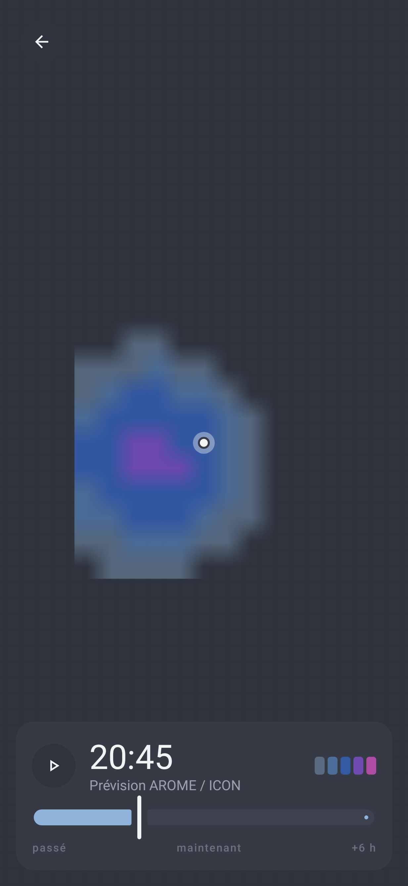
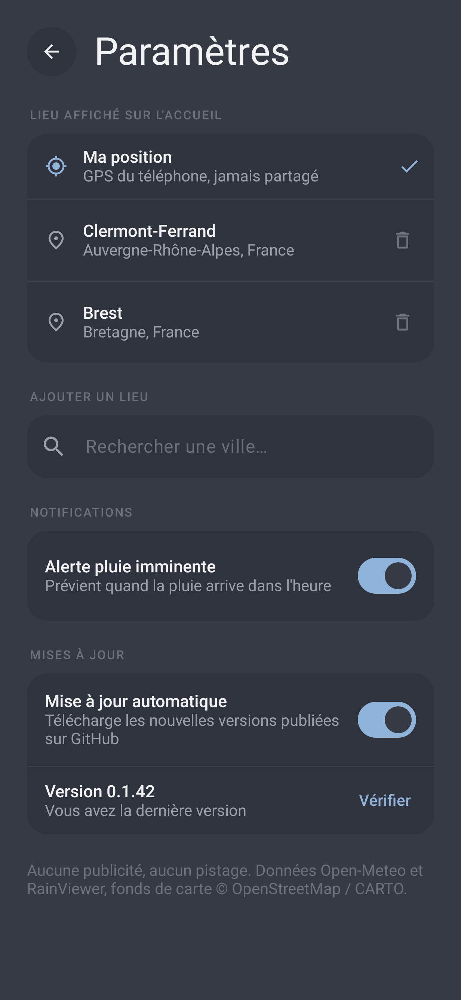

No Ad MétéoLa météo locale,
rien d'autre.
Android · gratuit · open-source
Prévisions précises à 15 minutes, tendance sur 7 jours et pluie des deux prochaines heures. Sans publicité, sans pistage, sans compte.
Télécharger l'APK Dernière version sur GitHub Releases



◎
Votre position
GPS par défaut, plus vos lieux enregistrés.
☂
Pluie à 15 min
Modèles haute résolution (AROME, ICON-D2) et alerte pluie dans l'heure.
▦
Carte de pluie
Radar observé et prévision animée sur 6 h.
▢
Widget
Température et pluie à venir sur l'écran d'accueil.
↻
Mise à jour auto
Les nouvelles versions s'installent depuis GitHub.
◌
Zéro publicité
Aucun SDK publicitaire, aucun pistage, open-source.